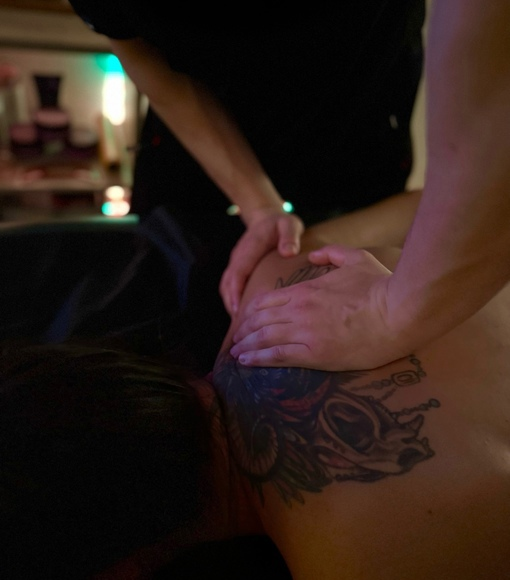
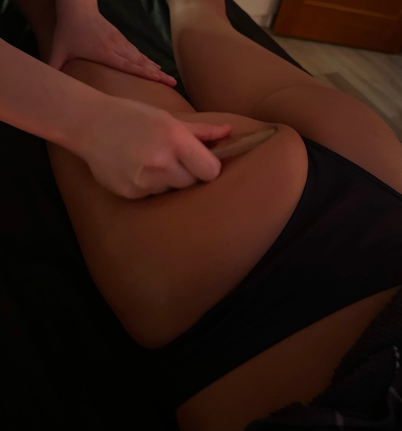
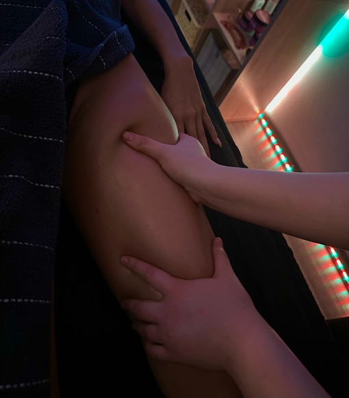
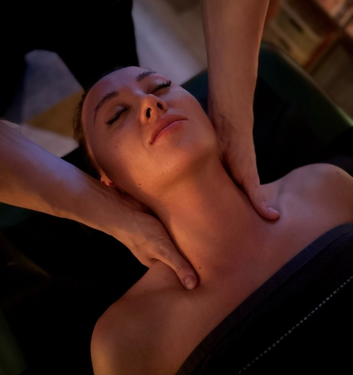
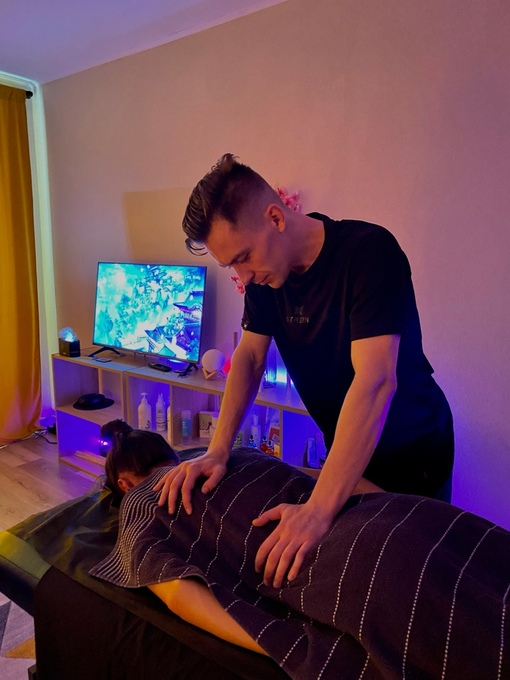
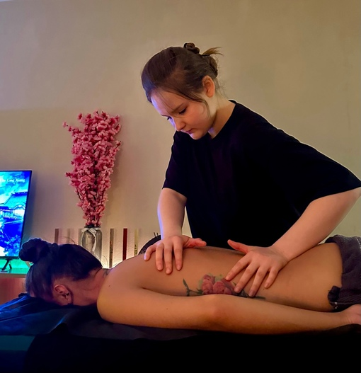

Массаж Швз

Массаж спины и ШВЗ позволяет тщательно проработать данные зоны, убрать зажимы, триггерные точки. Необходим при повышенном уровне стресса, хронической усталости, сидячей работе.
Антицелюлитный массаж

Антицеллюлитный массаж является одним из наиболее эффективных методов борьбы с целлюлитом и лишними жировыми отложениями. Массаж воздействует на подкожно-жировой слой, заставляя активизироваться обменные процессы в тканях. В процессе сеанса температура массируемых участков повышается на 1,5 - 2 градуса, что приводит к существенному уменьшению лишних объемов тела в этих зонах и улучшению состояния кожного покрова.
Лимфодренажный массаж

Лимфодренажный массаж обладает выраженным оздоровительным эффектом, так как главной функцией этого массажа является вывод излишней жидкости из организма. Данный вид массажа снимает отеки и корректирует фигуру за счет налаживания обменных процессов, повышает иммунитет и выводит токсины из организма.
Японский массаж АСАХИ

Osaka Massage представляет вашему вниманию японский лимфодренажный массаж по методу Асахи! В чем же его уникальность? Воздействие на глубинные ткани лица
Большинство массажных методик осуществляет лишь поверхностное воздействие, при котором наносится масло и пальцы легкими поглаживающими движениями проходят по массажным линиям. В массаже по методике Асахи за счет интенсивных нажатий и последовательных скользящих движений пальцами и ладонями прорабатывается мышечная, соединительная ткани, кости черепа.
Детокс-эффект
Массаж Асахи помогает вывести излишки жидкости из организма,а также избавиться от токсинов, которые накапливались годами. В результате - отеки исчезают, а мешки под глазами уменьшаются.
Моделирование лица
Интенсивная проработка мышечной и костной ткани, воздействие на сосуды и подкожную жировую прослойку позволяют создать четкий овал лица, убрать второй подбородок, разгладить мимические морщины.
Запуск процессов регенерации клеток и омоложения кожи лица
Метод помогает ускорить отток лимфы и улучшает кровообращение. Благодаря этому в глубоких подкожных тканях начинается выработка коллагеновых и эластиновых волокон, запускается процесс регенерации клеток, кожные покровы на лице восстанавливаются и обновляются.
При регулярном проведении массажа Асахи результаты будут заметны уже через один месяц!
Расслабляющий массаж

Расслабляющий массаж идеален и необходим при переутомлении, хронической усталости, недосыпе и бессоннице, долговременных умственных и физических нагрузках, нервных напряжениях.
Наши мастера используют уникальную технику Deep relax, позволяющую не только снять нервное напряжение, но и качественно проработать мышцы без боли.
Классический массаж

Классический массаж нацелен на снятие усталости, профилактику перенапряжения, стресса и различных заболеваний.
Является одним из самых приятных видов массажа,
поскольку делается со средней интенсивностью, а тело прорабатывается от макушки до пяток.